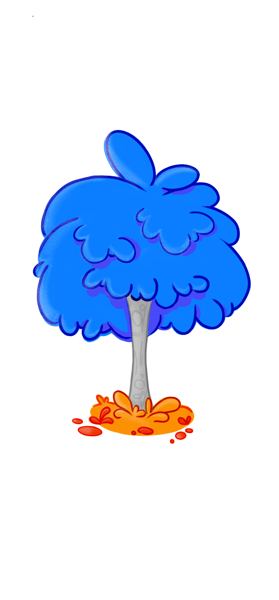
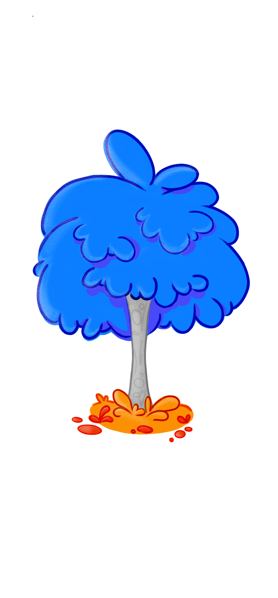
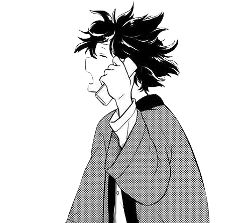
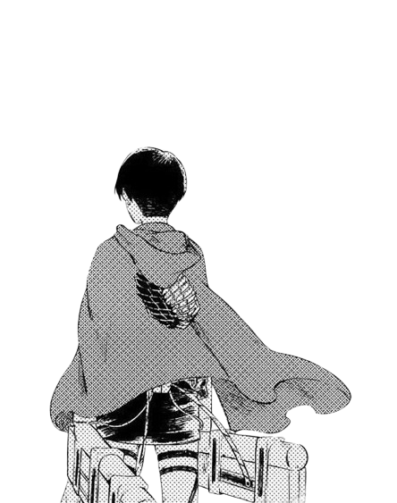
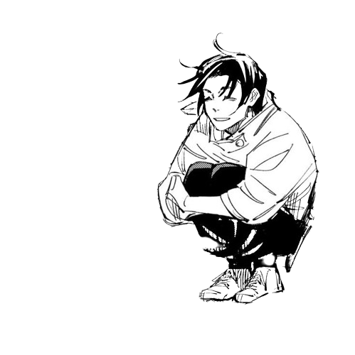

Minhas Obras Favoritas
Hyouka
Hyouka gira em torno de Houtarou Oreki, um estudante do ensino médio que segue a filosofia de "conservar energia" e evitar qualquer tipo de esforço desnecessário. Apesar de sua natureza preguiçosa, ele possui uma mente perspicaz e dedutiva. A pedido de sua irmã mais velha, Oreki se junta ao Clube de Literatura Clássica da escola, que está à beira de ser fechado.
No clube, ele conhece Eru Chitanda, uma garota curiosa e energética que o intriga com seus mistérios intrigantes. Chitanda, com sua frase contagiante "Estou curiosa!", obriga Oreki a usar suas habilidades dedutivas para solucionar diversos enigmas, desde eventos históricos do clube até problemas pessoais dos membros.
Attack on Titan
Em Attack on Titan, a humanidade vive em cidades cercadas por enormes muralhas que os protegem de Titãs, criaturas humanoides gigantes que devoram humanos. A história segue Eren Yeager, um jovem que jura vingar a morte de sua mãe e exterminar todos os Titãs após um ataque devastador à sua cidade natal.
Esta é a minha obra favorita. Nunca vi nada igual e tão impactante.
Jujutsu Kaisen
Em um mundo onde as emoções negativas se transformam em maldições, Yuji Itadori, um estudante do ensino médio com força física sobre-humana, se junta ao mundo dos feiticeiros jujutsu após engolir um dedo amaldiçoado para salvar seus amigos.
O dedo é hospedeiro de Sukuna Ryomen, o Rei das Maldições, um ser poderoso e cruel que deseja dominar o mundo. Agora, Itadori deve aprender a controlar o poder de Sukuna enquanto enfrenta outras maldições e protege a humanidade.
direito de imagem de fundo por: FreePik™